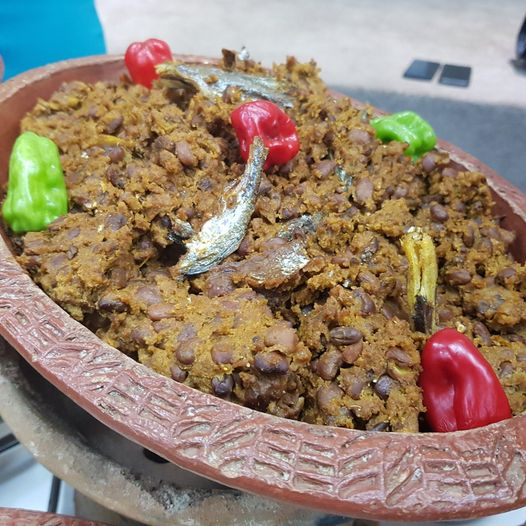

Djongoli ou Zankpiti est un plat d'haricot et sa existe en plusieurs variations, mais la préparation de base implique la cuisson des haricots, qui sont ensuite assaisonnés de divers manières. Certains le servent avec de l'huile rouge, d'autres avec des épices pilées comme l'oignon, l'ail et le piment. ça consiste à mélanger les haricots cuits avec de la farine de maïs et de l'huile.
NB: La quantité de farine de maïs à ajouter dépend de la texture que vous souhaitez pour votre djongoli. Avant d'ajouter la farine de maïs, assurez-vous qu'il y ait assez de l'eau sur vos haricots. Votre djongoli ne réussirait pas sans eau sur vos haricots.